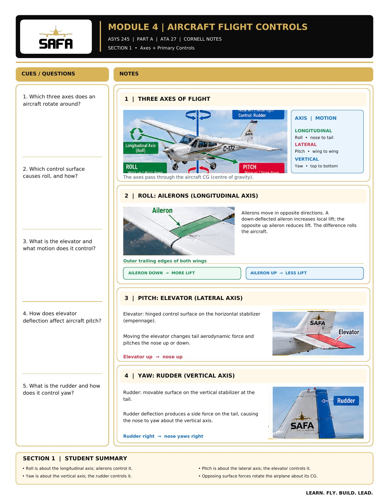

SAFA · SAIT · ASYS 245 · Module 4 · Flight Controls
Cornell Notes · Part A · Section 1

If the PDF button opens a blank page, use Download — some school browsers block PDFs inside embedded pages. The image above is the full page and prints as is.